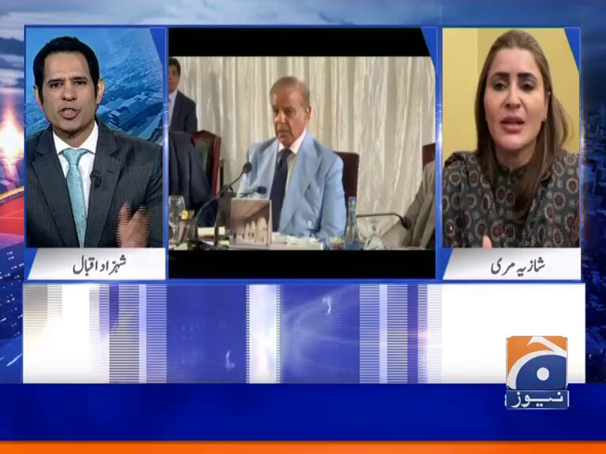
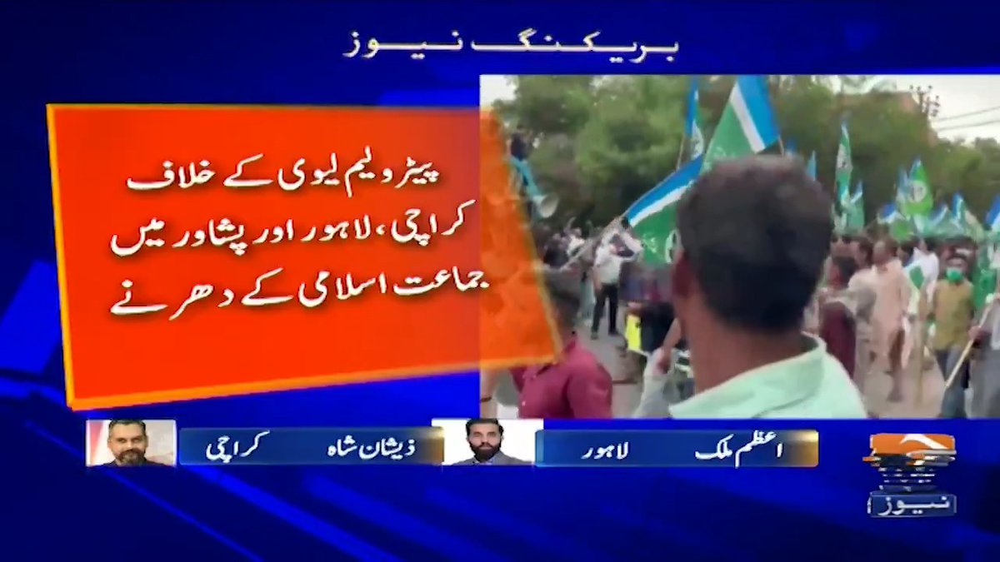
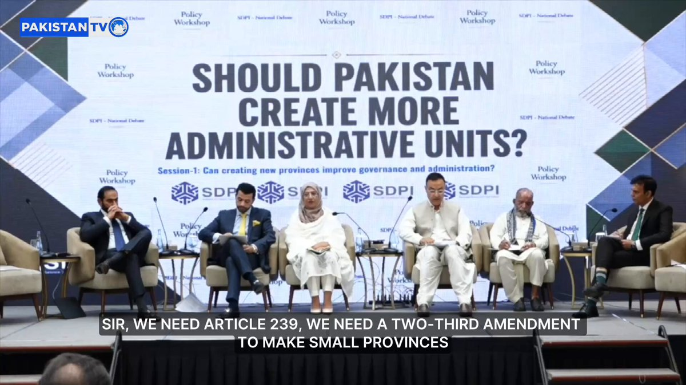
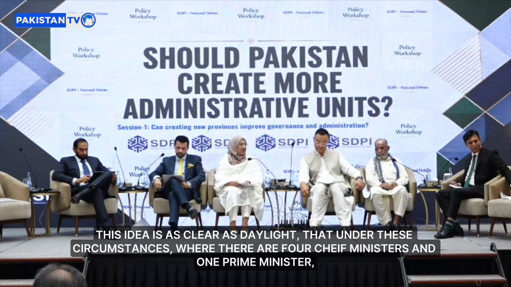
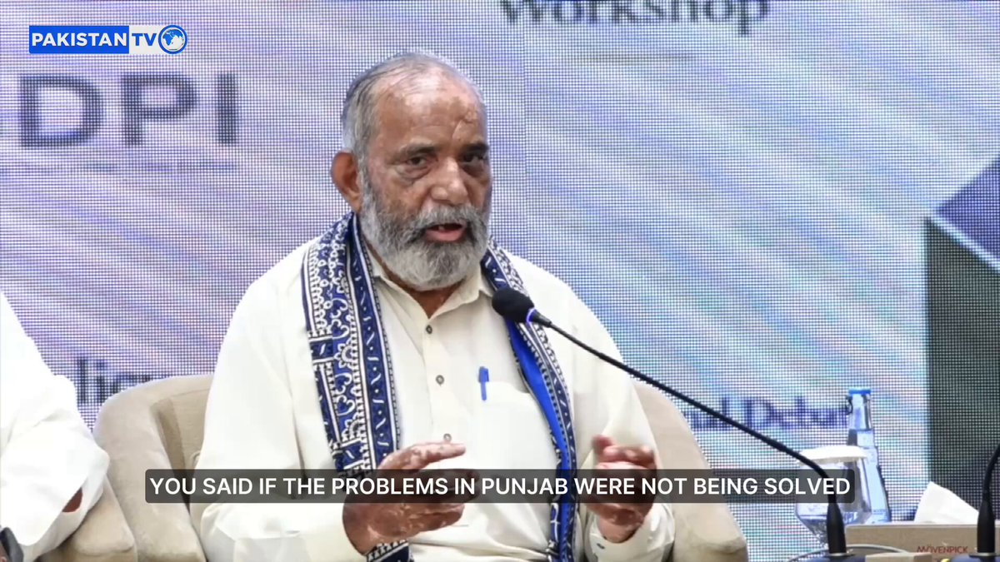
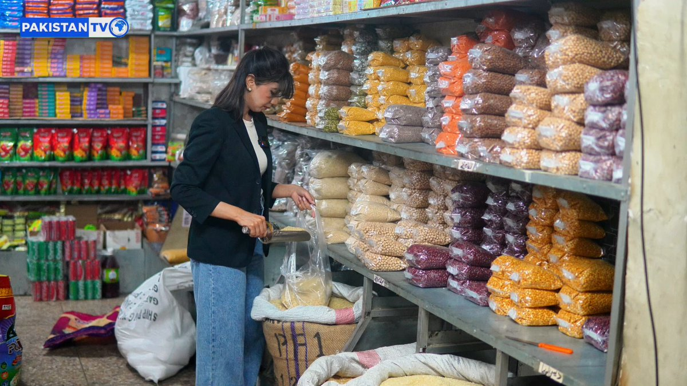
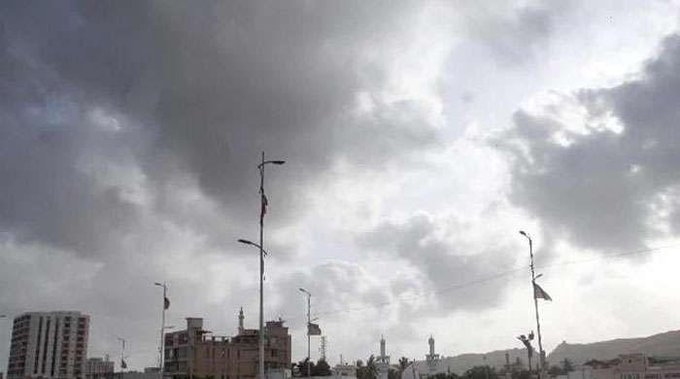
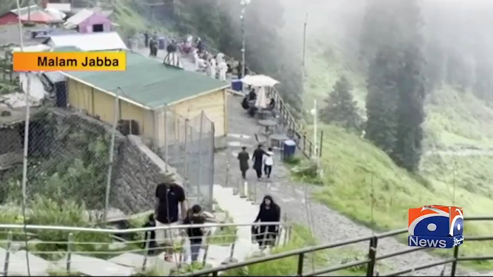

@PakTVGlobal
📝 原文: SDPI holds policy workshop
🇨🇳 译文: 省发展改革委举办政策研讨会

🕒 2026-08-16T12:08:51+00:00
| 来源 | 旧窗口内数量 | 本次新增 | 本次淘汰 | 当前窗口内共有 |
|---|---|---|---|---|
| 推文 + Dawn 新闻 | 0 | 25 | 0 | 25 |
| ARY News | 0 | 0 | 0 | 0 |
注：淘汰数 = 旧窗口内数量 + 本次新增 - 当前窗口内共有










暂无文章。